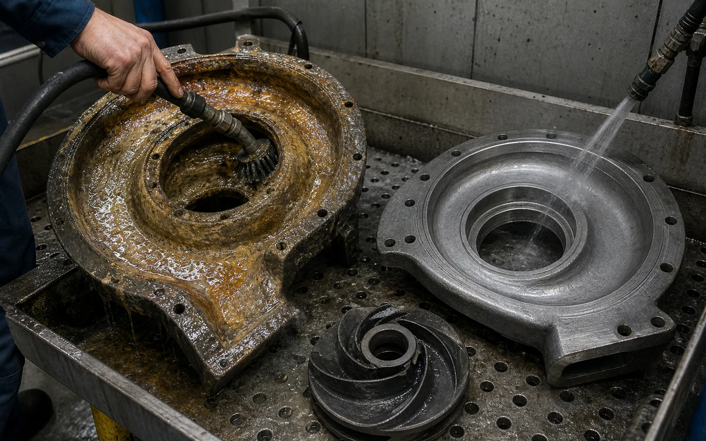
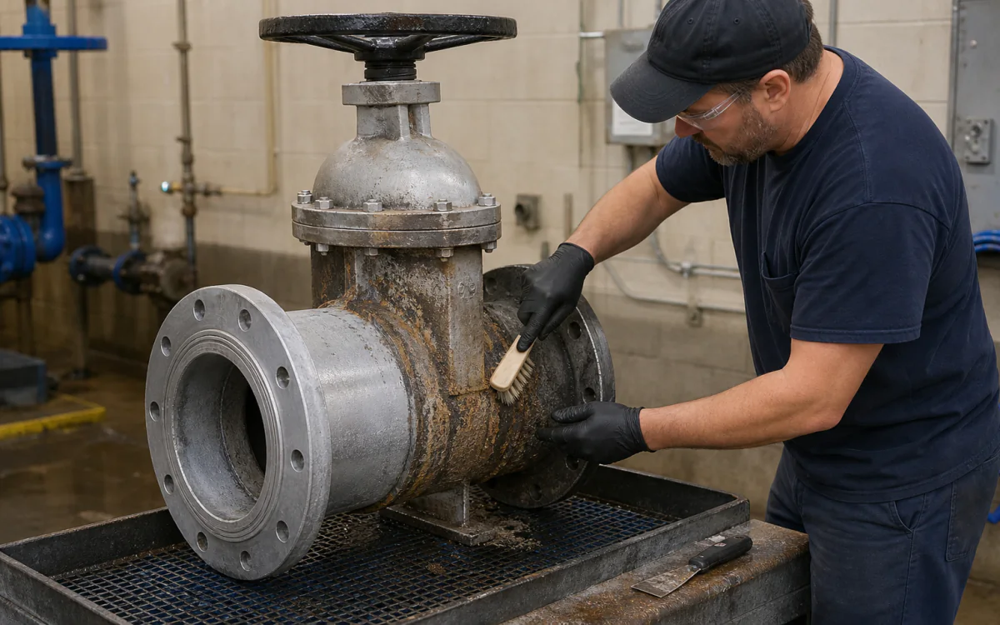
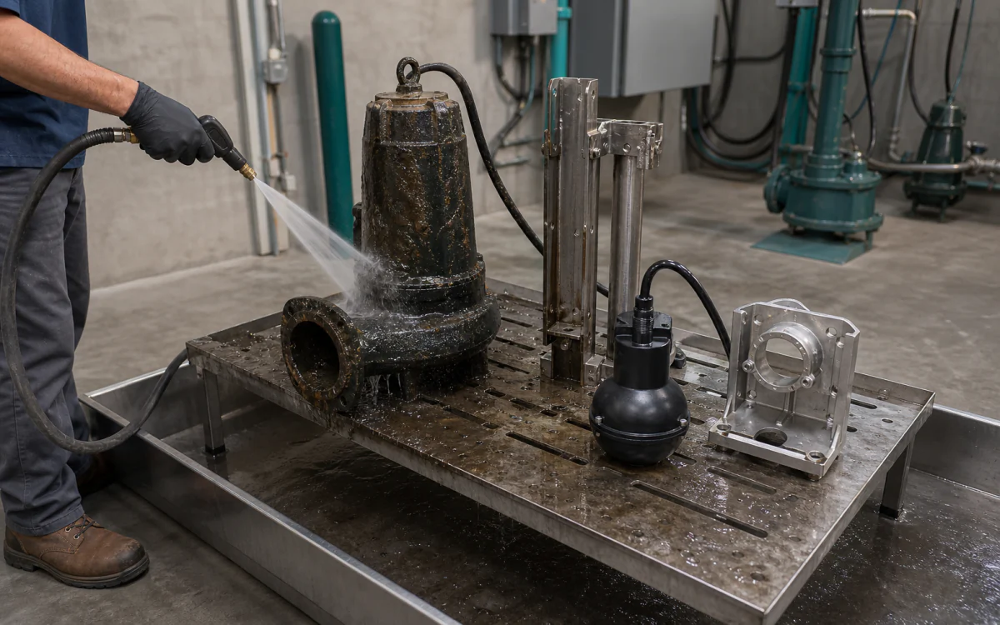

Clear scale, rust, and grease from hard-working utility equipment.
WaterSafe60 supports site-specific scale and corrosion control. HVAC HCR removes mineral buildups. HVAC CR cuts through greasy utility work.
- CleanPumps, valves, screens, strainers, heat exchangers, treatment skids, maintenance floors, and out-of-service storage components
- RemoveCarbonate scale, iron and manganese buildup, rust, grease, silt, and treatment-chemical residue
- Start withTake the equipment offline, remove loose buildup, circulate or soak with cleaner, brush, drain, rinse, and inspect
- ProductsVertKleen HVAC CR, WaterSafe60, VertKleen HVAC HCR
- Before you startRead the label and SDS, then try a small area first
- See products, first-test plan, and results
Cleaning products for Municipalities & Water Utilities.
Restore flow, rinse clean, and give crews a method they can repeat on the next job.
See VertKleen resultsWhat to check before you switch cleaners.
Try VertKleen on the real mess and surface before changing the whole operation.
Compare the finished result, product, labor, water, repeat passes, and downtime—not the jug price alone.



VertKleen products for Municipalities & Water Utilities.
Match the cleaner to the mess, surface, and way your team cleans.

VertKleen HVAC CR
Clear grease and organic buildup from HVAC drains, pans, and facility equipment with a concentrated 60% caustic soda replacement.

WaterSafe60
Control pH and mineral buildup with NSF/ANSI/CAN 60 certified water-treatment chemistry.

VertKleen HVAC HCR
Remove calcium, scale, and rust from HVAC equipment with a non-fuming hydrochloric-acid replacement.
Remove scale, rust, and grease from pumps, pipes, basins, and other utility equipment.
- Cleaning job
- Remove scale, rust, and grease from pumps, pipes, basins, and other utility equipment.
- Equipment and surfaces
- Pumps, valves, screens, strainers, heat exchangers, treatment skids, maintenance floors, and out-of-service storage components
- What needs to come off
- Carbonate scale, iron and manganese buildup, rust, grease, silt, and treatment-chemical residue
- Products to start with
- VertKleen HVAC CR, WaterSafe60, VertKleen HVAC HCR
- How to clean
- Take the equipment offline, remove loose buildup, circulate or soak with cleaner, brush, drain, rinse, and inspect
- What to compare
- Finished result, crew time, product, water, passes, downtime, and repeat work.